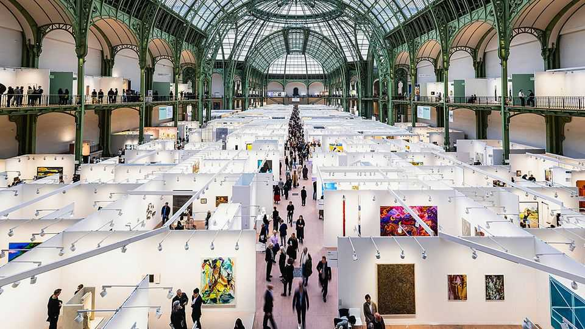

Are there too many art fairs?
Probably. But FOMO keeps collectors and dealers going to them

Oct 22nd 2026
ART COLLECTORS are like swallows. They flock together, preen and feed (on canapés and champagne). They also migrate seasonally. In October they roost in Paris during Art Basel, which runs from October 21st-25th. (The early birds landed in London for Frieze, another art fair, the previous week.) In December they head to Miami; in March to Maastricht; in May to New York; and in June to the original Basel in Switzerland. And that does not include the more adventurous ones, who zoom off to fairs in Doha, Hong Kong and Seoul.
It is as exhausting as it sounds. “Everyone is talking about art-fair fatigue,” says Aurelie Cauchy of the Twentieth, an advisory firm. In 2025 there were 370 major art fairs—more than one for every day of the year. That is up from around 55 in 2000, says Clare McAndrew, an art economist. Can collectors and dealers maintain their current pace? Beneath the glass roof of the sun-drenched Grand Palais, where Art Basel Paris takes place, there is more gloom than the Instagram posts would have you believe (and not just because of the recent unrest in France).
Gallerists are facing what the French call a choix cornélien (difficult choice), says Ms Cauchy. The cost of keeping a physical storefront is growing, but fewer clients are casually popping in. Recently, some have had to lay off staff or close up entirely. Dealers feel pressure to keep travelling to fairs in order to find new clients and keep the artists they represent happy.
But this carries an ever-growing price tag, which many struggle to afford. Shipping costs are triple what they were before covid-19, says Thaddaeus Ropac, a prominent gallerist. (It’s not just getting there; all unsold works have to be shipped back.) Gallerists’ own travel costs have travelled higher, too. And the booths themselves have become more expensive to rent and build. Art Basel, for example, charges around $29,000 for its smallest booth and more than $177,000 for the largest. (The square-metre price for large exhibitors is 32% more in real terms than in 2018.) Those fees just get you floor space: exhibitors need to rent carpet, lighting and add other design features. “Fairs are becoming a burden,” especially for smaller and mid-sized galleries, says Valentina Castellani, an art-market expert.
Costs have changed the art that appears in fairs. Sculptures are so expensive to ship that they rarely make financial sense. Nor do items with lower price tags, such as many photographs.
Since fairs first arrived on the art scene in the 1960s-70s, collectors have found them worthwhile because of their scale and efficiency (so much art is packed into a small space). But art enthusiasts now have fair complaints. One is crowds. Fairs have a lot of guests and such long queues that you’d be forgiven for thinking VIP stands for “very immobile people”. Basel has responded by launching a VVIP preview, Avant-Première, an evening before the VIP opening to offer buyers more quietude. Meanwhile, collectors are culling their calendars and choosing to attend fewer fairs. This month some Americans put the freeze on Frieze and opted to attend only Art Basel Paris instead.
In the future there may be fewer international fairs. People do not want to see the same gallerists everywhere. To lure collectors, organisers will need to offer a more distinctive experience, with more local galleries and artists. This is a broader trend beyond art. “We’ve gone from a moment where everything was meta-globalist to regionalisation,” says Noah Horowitz, the boss of Art Basel. Some gallerists are excited, thinking they may participate in fewer fairs but encounter new local collectors at the ones they do. In art and in commerce, sometimes less is more. ■